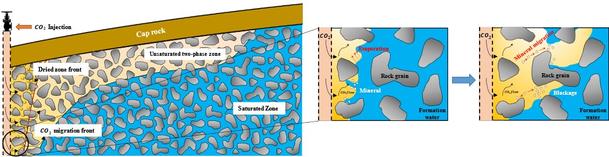

University of Tulsa
Aaditya Khanal Lab
Carbon-dioxide Sequestration
Impact of CO₂ Injection on Reservoir Rock and Fluid Properties

CO₂ geo-storage involves the permanent sequestration of carbon dioxide in subsurface formations to mitigate climate change. At Aaditya Khanal Lab, we use a combination of numerical simulations and data-driven approaches to explore the geochemical processes that occur during carbon capture and storage (CCS).
In our lab, we are dedicated to advancing the understanding of carbon dioxide (CO₂) storage in deep saline aquifers as a means of mitigating anthropogenic emissions. We employ reactive transport models and numerical simulations to study how geochemical reactions influence reservoir properties and CO₂ trapping mechanisms. Our work explores the role of mineral precipitation/dissolution, the impact of capillary pressure, and the effects of brine composition on CO₂ mineralization. Through the use of proxy models and Monte Carlo simulations, we address uncertainties in reaction kinetics. Our research provides critical insights into optimizing CO₂ sequestration strategies by understanding fluid-rock interactions and enhancing CO₂ retention within geological formations.
Machine Learning in CO₂ Sequestration Site Selection

Our lab focuses on advancing Carbon Capture, Utilization, and Storage (CCUS) by integrating machine learning (ML) to optimize CO₂ sequestration in deep saline aquifers and other geological formations. We develop physics-based proxy models using techniques to predict CO₂ trapping mechanisms, including residual, solubility, and mineral trapping. By analyzing various injection strategies (e.g., Water-Alternating-Gas, continuous, and intermittent) and assessing key geological parameters (porosity, permeability, capillary pressure), our models achieve high predictive accuracy (R² > 0.99) while significantly reducing computational time. Our work also addresses uncertainty quantification and identifies influential factors affecting CO₂ storage performance, helping optimize sequestration operations and support large-scale implementation of CCUS technologies.
Investigating CO₂ Trapping Mechanisms Using Hele-Shaw Cell Experiments
We investigate the mechanisms that enhance CO₂ storage efficiency in saline aquifers, focusing on density-driven convection and dissolution trapping. Through 2D Hele-Shaw cell experiments, we visualize how CO₂ dissolves into brine under varying conditions such as ionic concentrations, reservoir permeability, injection locations, dipping angles, and permeability heterogeneity. Our research demonstrates that salts accelerate the onset of convection and influence convective finger patterns, while heterogeneities like flow barriers and fractures affect CO₂ sweep efficiency and channeling. We also analyze the impact of reservoir permeability on CO₂ dissolution dynamics, identifying preferential dissolution paths and quantifying the relationship between finger growth rates and permeability. By combining experimental observations and spectrophotometric methods to measure convective flux, we improve the understanding of CO₂ transport and storage behavior in heterogeneous formations, contributing to safer and more effective long-term carbon sequestration strategies.
Digital Rock Physics

Digital rock physics bridges the gap between traditional laboratory analyses and advanced computational modeling, offering innovative solutions to understand and predict the behavior of fluids in porous media. At Aaditya Khanal Lab, we utilize cutting-edge techniques to evaluate reservoir rock properties critical for applications such as hydrocarbon recovery, carbon dioxide storage, and underground hydrogen storage (UHS). Our research employs microcomputed tomography (micro-CT) imaging and machine learning frameworks to streamline the prediction of key rock properties such as porosity, pore surface area, and throat area. By leveraging segmented digital rock images, our workflow delivers computationally efficient and accurate models for pore-scale analysis, significantly reducing the cost and time compared to traditional core-based methods.
Our studies extend beyond pore-scale analyses to tackle critical challenges in UHS and CCUS, particularly understanding capillary trapping mechanisms. We use digital rock physics and pore-network modeling to analyze the relationship between microscopic pore structures and gas trapping behavior.Through a combination of data-driven models, advanced imaging, and reservoir-scale simulations, Aaditya Khanal Lab is shaping the future of digital rock physics and its application to sustainable energy technologies.Underground Hydrogen Storage
Our lab focuses on advancing the understanding and optimization of Underground Hydrogen Storage (UHS) as a viable large-scale energy storage solution to support the transition to a net-zero carbon future. We investigate how hydrogen behaves in subsurface porous media, emphasizing the influence of pore structures, reservoir heterogeneity, and rock-fluid interactions on hydrogen retention and loss mechanisms. Our research uses experimental approachess, alongside numerical simulations to analyze capillary trapping, relative permeability hysteresis, and mass transfer processes. We quantify the fraction of unrecoverable hydrogen due to capillary trapping, evaluate the impact of reservoir properties (such as porosity and permeability), and study the effects of geological factors like dipping angles and fracture networks. Our work identifies critical parameters affecting hydrogen loss, such as dissolution, diffusion, and reservoir boundaries, and aims to inform the safe, efficient, and economical selection of UHS sites. By bridging pore-scale analysis with reservoir-scale behavior, we contribute to enhancing the reliability of hydrogen storage systems and support the development of a sustainable hydrogen economy.
Microfluidics investigation
Microfluidics analysis plays a crucial role in understanding the intricate mechanisms of Carbon Capture, Utilization, and Storage (CCUS) and Underground Hydrogen Storage (UHS) at the pore scale. By utilizing microfluidic devices, we can visualize and quantify fluid dynamics, capillary trapping, and the interactions between injected gases (CO₂ or H₂) and brine within subsurface porous media. These experiments enable detailed observation of gravitational instabilities, dissolution processes, and the impact of pore structure heterogeneity on storage efficiency and gas retention. Microfluidics provides valuable insights into factors affecting storage security, such as relative permeability hysteresis, diffusive flux, and rock-fluid interactions, aiding in the design of safer and more efficient CCUS and UHS strategies.